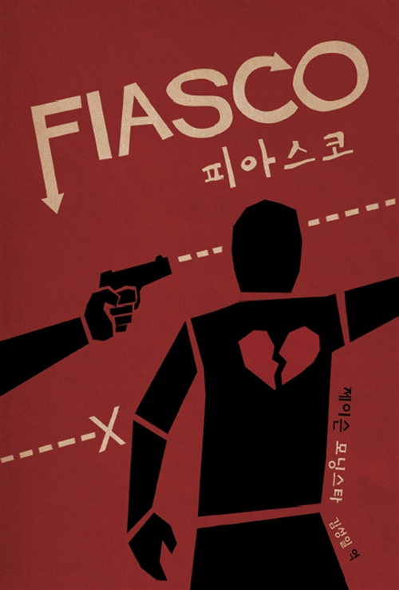
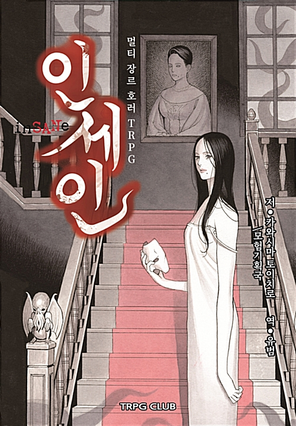
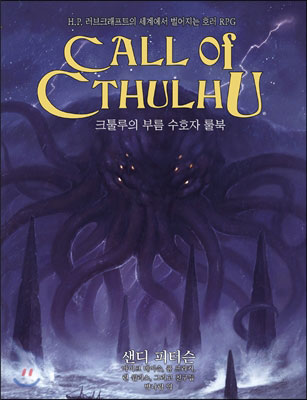

피아스코피아스코는 불리 펄핏 게임스의 제이슨 모닝스타가 디자인한,
마스터 없이 3~5명이 둘러 앉아 3~4시간에 끝낼 수 있는 단편 RPG 시스템입니다.
다양한 캐릭터, 다양한 이야기, 다양한 엔딩이 가능하지만, 대개는 뭔가 사소한 이득을 얻기 위해 몸부림치다가 신세를 망치는 사람들의 이야기가 됩니다.

Rull.2
인세인
『인세인』은 공포와 광기의 사이에서 흔들리는 인간들을 그리는 게임입니다.
사건과 인물의 관계, 인물과 인물의 관계,
장면을 지날수록 심화되는 【광기】속에서 밝혀지는 【비밀】들은 봉마인을 공포에 떨게 할 것입니다.

Rull.3
크툴루의부름크툴루의 부름은 H.P. 러브크래프트의 세계를 다루는 테이블 롤플레잉 게임입니다.
크툴루의 부름에는 비밀, 수수께끼, 공포가 가득합니다.
여러분은 용감한 탐사자가 되어 기이하고 위험한 곳들을 가고,
흉악한 음모를 밝혀내고, 크툴루 신화의 공포들에 맞섭니다.
이상을 붕괴시키는 존재들, 괴물들, 미친 사교도들과도 만납니다.
잊힌 지식이 담긴 기이한 고서들에서, 여러분은 인간이 알아서는 안 될 지식을 얻습니다.
여러분의 행동이 세계의 운명을 결정하게 될지도 모릅니다.

Rull.4
퀼콧 멀트하우스가 만든 1인용 RPG입니다. 제목 그대로 플레이어는 깃털펜으로 유명인사에게 편지를 쓰는 인물이 됩니다.